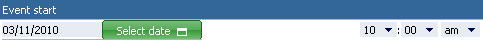
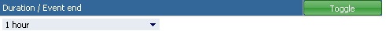
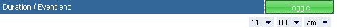
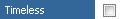

Time options. Here you set detailed information about the event start, end or duration.

In the first part you choose the start date and time. You can set the date by filling the field to the left or by clicking "Select date" button and displaying
small calendar. On the right side you can change the start time, by selecting right options from three selects (or two, if you use 24 hour time display).

In the second part you choose duration or end time of the event. To set a duration, choose one of the options available in select to the left (5, 15, 30 or 45 minutes; 1, 2, 4 or 8 hours). If you want to determine the end time instead of duration, clicking "Toggle" will let you do so.

To determine end time, choose the desired options from three selects available to the right (or two, if you use 24 hour time display). If you want to go back to setting duration from this point, click "Toggle" button.

If you don't want to determine the exact time of the event you are creating or editing, check "Timeless" option for it.


 in the top left corner of the frame. When you hover mouse over it, details of the event will be displayed. When you click on this icon, then menu with actions will be displayed.
There can be sometimes this icon
in the top left corner of the frame. When you hover mouse over it, details of the event will be displayed. When you click on this icon, then menu with actions will be displayed.
There can be sometimes this icon  on the event frame. It means that the event is repeatable.
on the event frame. It means that the event is repeatable.


 "Public, Read-Only" - everyone may see event and it's details, but only users assigned to the event may change it.
"Public, Read-Only" - everyone may see event and it's details, but only users assigned to the event may change it.
 "Private" - only users assigned to the event may see or change it.
"Private" - only users assigned to the event may see or change it.
 Low
Low
 Medium
Medium
 High
High
 "Open" - the event hasn't started yet
"Open" - the event hasn't started yet
 "In Progress" - the event has already started and is still running
"In Progress" - the event has already started and is still running
 ). This will direct you to a leightbox (described below).
). This will direct you to a leightbox (described below).
 icon form the "Actions" field corresponding with the event.
icon form the "Actions" field corresponding with the event.
 View event's details
View event's details
 Edit event's details
Edit event's details
 Change the date of the event - clicking on this will display a
Change the date of the event - clicking on this will display a  /
/ These icons indicate whether or not the event is subscribed, i.e. whether you will be noticed if the event is changed. Green one means, that you subscribe the event and clicking on it will unsubscribe the event. Opposite, gray one says that event isn't subsribed and clicking on it will start subscription.
These icons indicate whether or not the event is subscribed, i.e. whether you will be noticed if the event is changed. Green one means, that you subscribe the event and clicking on it will unsubscribe the event. Opposite, gray one says that event isn't subsribed and clicking on it will start subscription.
 This is an information icon. By hovering mouse over it you will see additional information about the event, like time of creation and last edition and who created and edited it.
This is an information icon. By hovering mouse over it you will see additional information about the event, like time of creation and last edition and who created and edited it.
 Adding a new event - follow up to the displayed one.
Adding a new event - follow up to the displayed one.
 Creation of a new task - follow up to the displayed event. Appears only if the "Tasks" module is installed.
Creation of a new task - follow up to the displayed event. Appears only if the "Tasks" module is installed.
 Creation of a new phone call - follow up to the displayed event. Appears only if the "Phone Call" module is installed.
Creation of a new phone call - follow up to the displayed event. Appears only if the "Phone Call" module is installed.